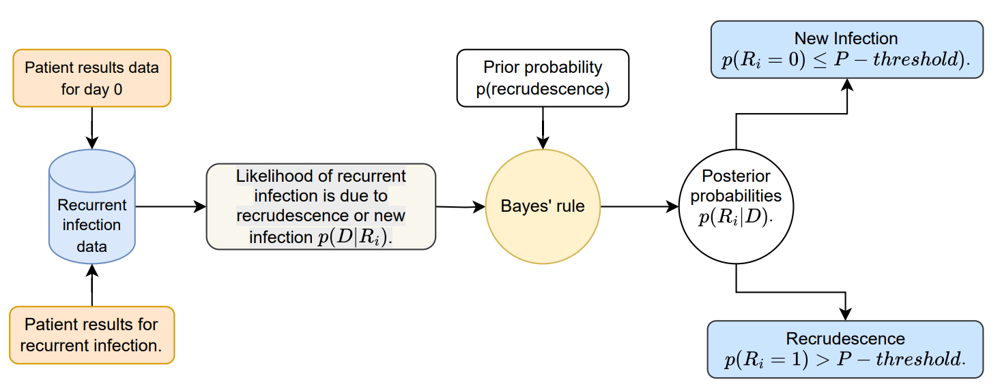
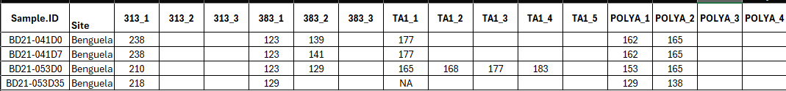
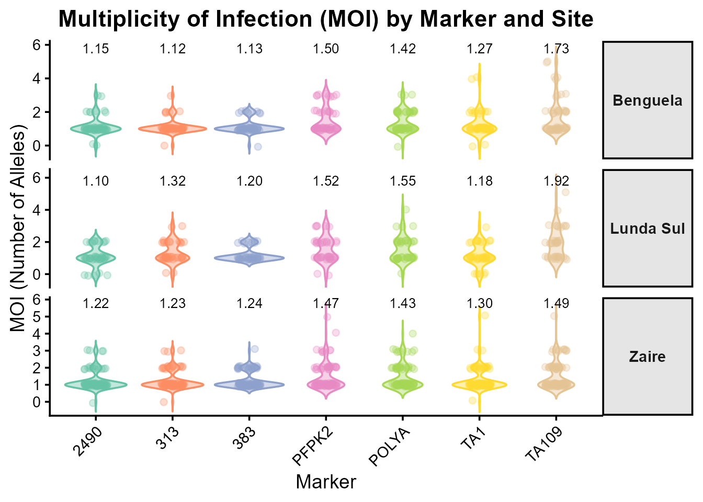
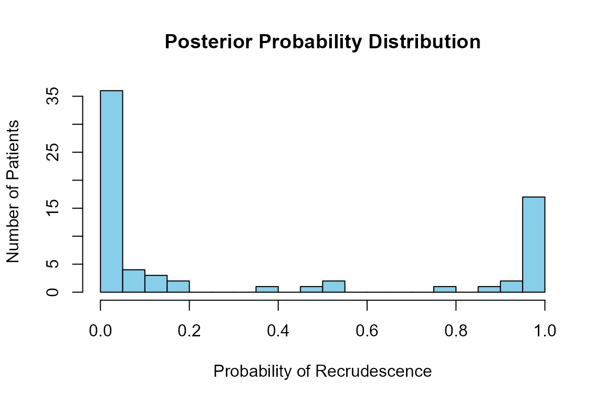
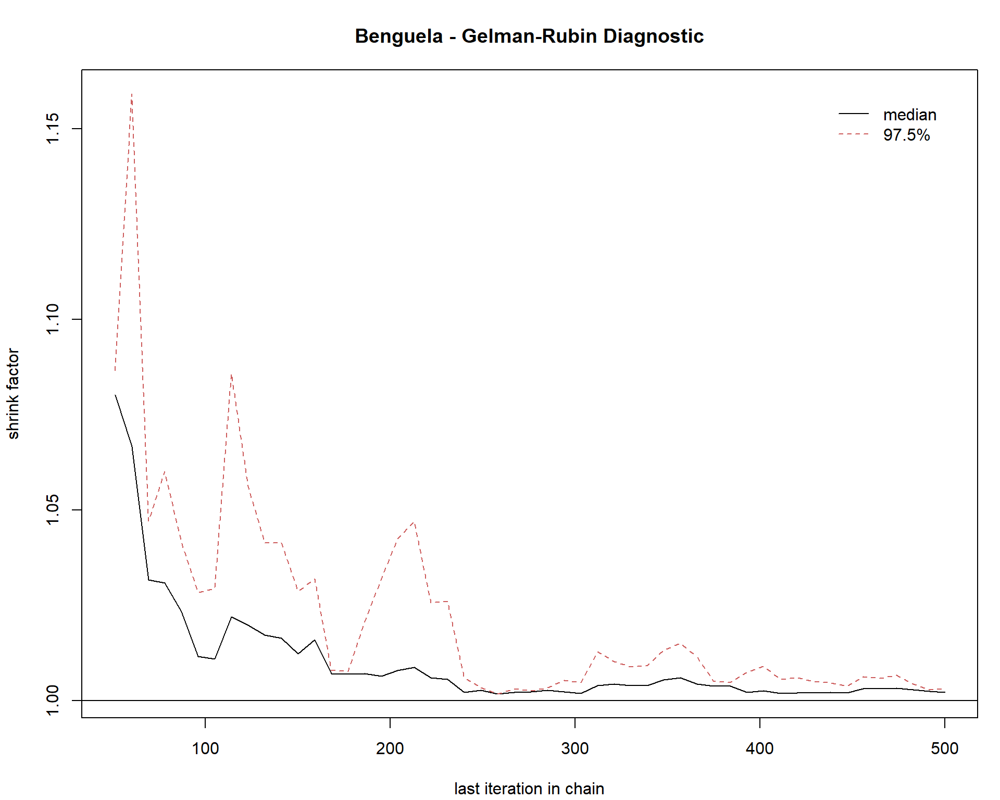
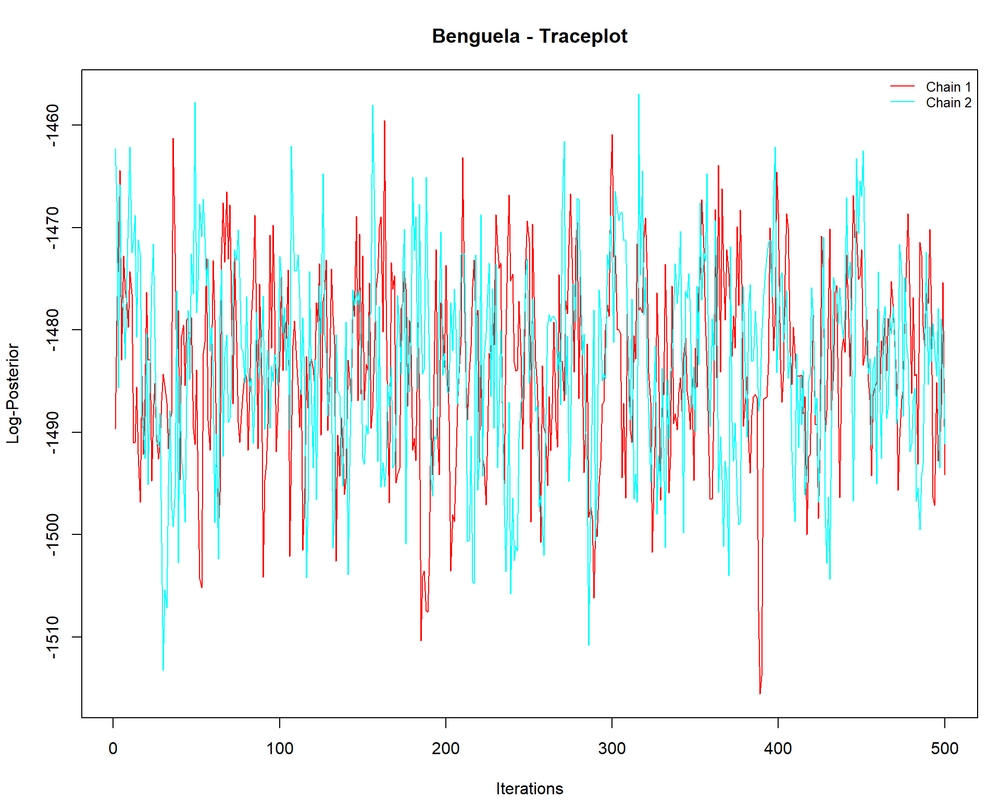
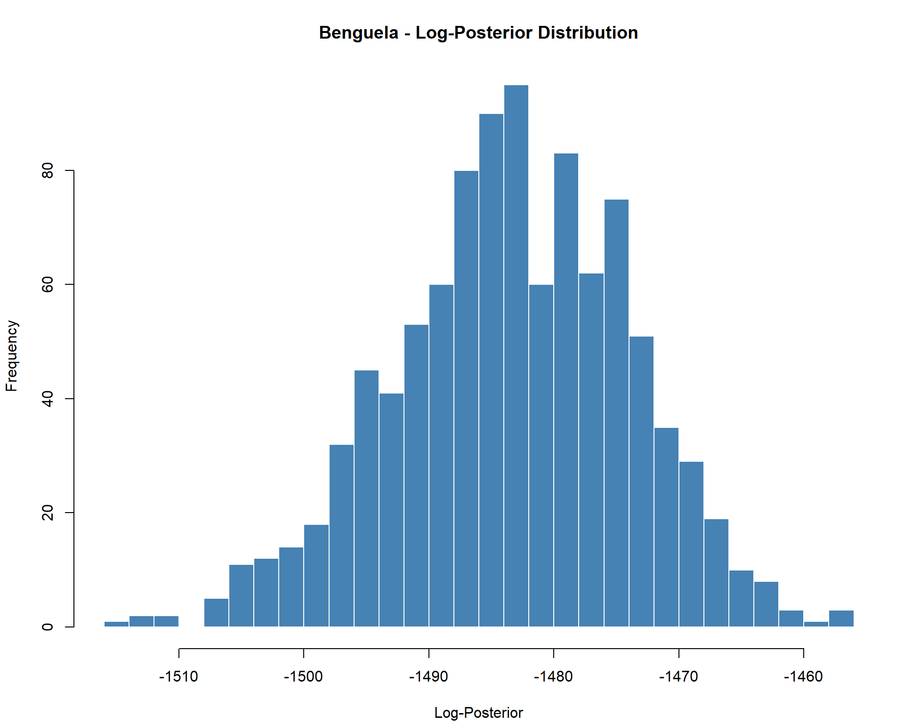
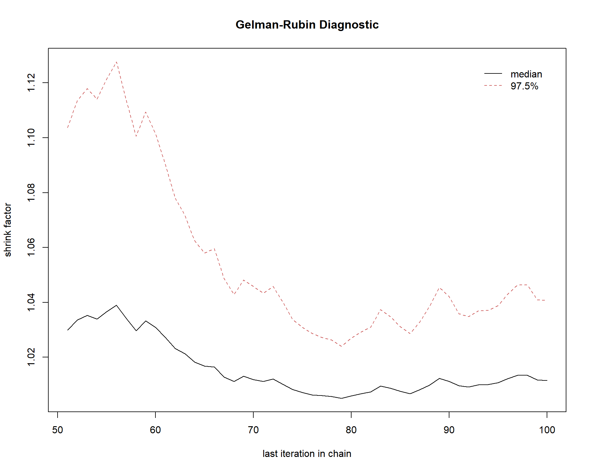
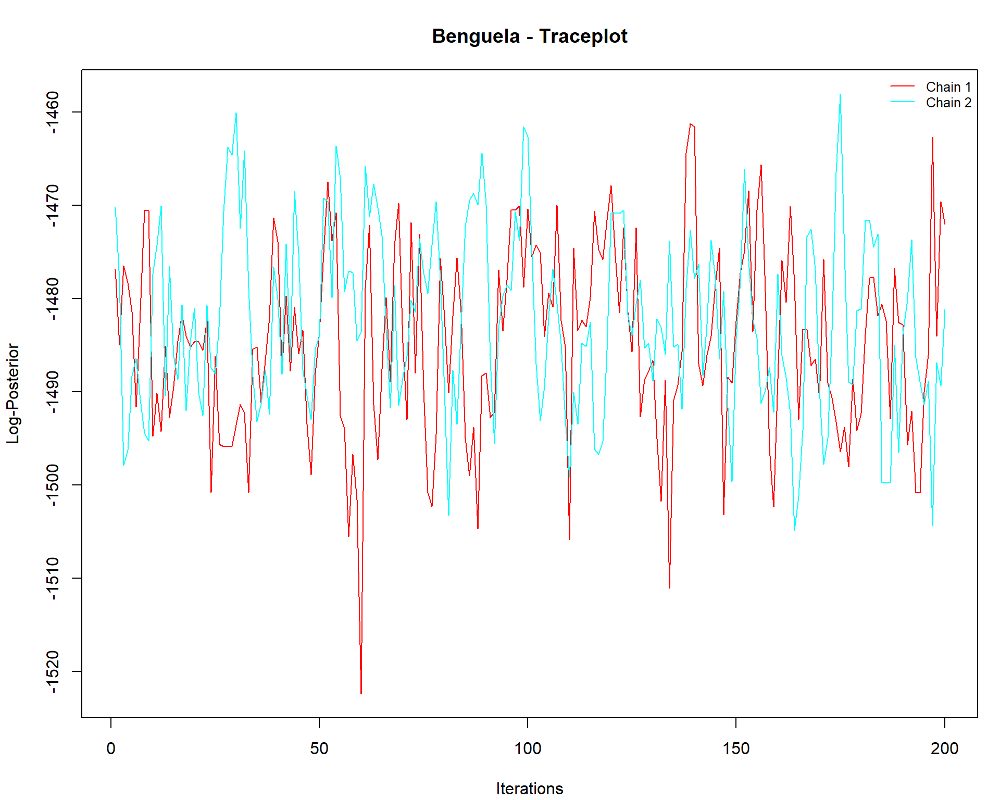
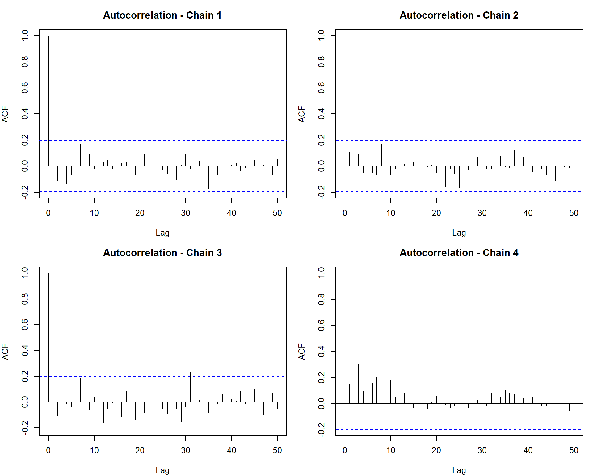

1. Introduction
The World Health Organization (WHO) recommends Therapeutic Efficacy Studies (TES)to monitor antimalarial drug effectiveness. In TES, patients with uncomplicated malaria are treated and followed for several weeks to assess whether the infection clears and remains suppressed. A key challenge during follow-up is distinguishing between two causes of recurrent parasitaemia:
- recrudescence: the reappearance of parasites from the original infection after partial clearance. + reinfection: a new infection from a separate mosquito bite.
This distinction, known as molecular correction, relies on comparing parasite genotypes from the initial infection and any subsequent recurrence.
MalReBay is an R package that implements a
Bayesian framework for molecular correction. Rather
than making a deterministic call, it uses genotyping data from a
patient’s initial infection (day 0) and recurrence samples to estimate
the probability that a recurrence is due to
recrudescence versus reinfection.
Compared to rule-based methods, MalReBay explicitly
accounts for genotyping uncertainty, within-host diversity, and local
allele frequency information, providing a principled and robust
classification.
This tutorial provides a step-by-step guide to the main analysis workflow, from loading your data to interpreting the final results. Starting with the conceptual framework.
2. Bayesian framework for molecular correction
For each patient , a binary variable indicates the recurrence cause: for recrudescence and for reinfection.Bayesian inference updates prior beliefs about using the observed genotyping data , producing the posterior probability .

The three components of the model are:
Prior is the baseline belief about recrudescence before seeing the data.
Likelihood is the probability of the observed allele patterns given each hypothesis, accounting for allele frequencies, within-host diversity, and genotyping errors.
Posterior is the updated probability that a recurrence is a recrudescence after combining priors and data.
Recurrences events are classified as recrudescence when exceeds a threshold (e.g., 0.5). These probabilities cannot be solved analytically because the posterior distribution has no closed form; therefore, MalReBay uses Markov chain Monte Carlo (MCMC) sampling to approximate them.
3. The MalReBay workflow
The main MalReBay() function automates the full
pipeline: it takes paired genotyping data from day 0 and
day of recurrence, combines them with model parameters
(genotyping error rates, within-host diversity, allele frequencies),
runs MCMC sampling, and returns posterior estimates and recurrence
classifications summarised at both the patient and study level. The
following sections describe the required input formats and how to
prepare your data.
4. Input Data
MalReBay accepts two types of genotyping data:
Length-polymorphic markers (e.g., microsatellites, MSP, GLURP).
Amplicon sequencing data (haplotype).
The primary input is an Excel file containing genotyping data. The input structure is similar for both types, with one key difference: length-polymorphic columns store fragment lengths in base pairs, while amplicon sequencing columns store haplotype labels.
4.1 Length-polymorphic markers
The Excel file should contain:
A
Sample.IDcolumn that uniquely identifies each sample and includes “Day 0” or “Day of recurrence”.The day of sampling (0 for baseline, X for recurrence). Note sometimes this is included in the Sample.ID column (e.g.,
BD21-002D0andBD21-002D42).A
Sitecolumn indicating the geographical origin of the sample.Marker columns named like
LocusName_AlleleNumber(e.g.,313_1,313_2,313_3, etc.), where each cell represents the parasite clones fragment length observed in base pairs.
Here is an example of the expected input format for length-polymorphic data:

5. Descriptive analysis
Before running the classification analysis, exploring your genotyping
data is strongly recommended. MalReBay provides
visualizations tailored to each data type that can help you:
- Identify the most informative or frequent markers in the population
- Assess data quality and completeness
- Evaluate overall marker polymorphism and richness
Both data types share two core visualisation types, the MOI violin plots and diversity charts.
MOI Violin Plots: Show the distribution of the number of distinct parasite clones per infection, providing insight into infection complexity across samples.
Allele Diversity Pie Charts: Display the relative frequencies of different alleles within each marker, highlighting dominant alleles and overall marker polymorphism.
6. Example of classification: length-polymorphic markers
In this section, we provide a step-by-step example of using the
MalReBay package to classify recurrent malaria infections
with length-polymorphic genotyping data.
We will use an example dataset included with the package, containing
data from a Therapeutic Efficacy Study (TES) conducted in Angola in
2021. The dataset includes 7 microsatellite markers; 313,
383, TA1, POLYA,
PFPK2, 2490, TA109, genotyped
from 70 patients from three study sites: Benguela, Lunda Sul and
Zaire.
We will focus on a single site: Benguela.
# Load required libraries
library(MalReBay)
library(dplyr)
library(ggplot2)
library(purrr)
library(tidyr)
library(here)
library(kableExtra)Step 1: Load data
We import the example dataset using
MalReBay:::import_data(). The dataset includes both late
failure samples and any additional samples.
input_file_lp <- system.file("extdata", "Angola_2021_TES_7NMS.xlsx", package = "MalReBay")
marker_file <- system.file("extdata", "makers_details.xlsx", package = "MalReBay")
# Import and validate data
imported_data <- MalReBay::import_data(
filepath = input_file_lp,
marker_filepath = marker_file
)
#> INFO: Detected 'length_polymorphic' data format.
#> Warning in MalReBay::import_data(filepath = input_file_lp, marker_filepath =
#> marker_file): NAs introduced by coercion
#> Warning in FUN(X[[i]], ...): NAs introduced by coercion
#> Warning in FUN(X[[i]], ...): NAs introduced by coercion
#> Warning in FUN(X[[i]], ...): NAs introduced by coercion
#> Warning in FUN(X[[i]], ...): NAs introduced by coercion
#> Warning in FUN(X[[i]], ...): NAs introduced by coercion
#> Warning in FUN(X[[i]], ...): NAs introduced by coercion
#> INFO: Using 7 markers: 313, 383, TA1, POLYA, PFPK2, 2490, TA109Step 2: Define an Output Folder
An output folder is defined to store results generated by the analysis. If the folder does not already exist, it will be created automatically.
# Use a temporary directory
output_dir_lp <- file.path(tempdir(), "malrebay_results")
if (!dir.exists(output_dir_lp)) {
dir.create(output_dir_lp, recursive = TRUE)
}
# Prepare data for descriptive plots
genotypedata_lp <- dplyr::bind_rows(imported_data$late_failures, imported_data$additional)Step 3: Descriptive statistics
In this step, we generate summary statistics to explore the genetic characteristics of the data before running the Bayesian model. Two key measures are considered:
Multiplicity of Infection (MOI): estimates the number of distinct parasite clones per marker in each sample, providing insight into within-host diversity.
Marker diversity: visualizes the distribution of allele sizes for each marker, helping to assess the level of genetic variability in the study population.
These descriptive outputs give context for interpreting molecular correction results and can highlight potential sources of genotyping uncertainty.
Multiplicity of Infection (MOI)
if (nrow(genotypedata_lp) > 0) {
first_site <- unique(genotypedata_lp$Site)[1]
genotypedata_s1 <- dplyr::filter(genotypedata_lp, Site == first_site)
moi_plots <- MalReBay::plot_moi(
genotypedata = genotypedata_s1,
output_folder = output_dir_lp
)
print(moi_plots[[first_site]])
}
Marker diversity
if (nrow(genotypedata_lp) > 0) {
MalReBay::plot_markers_diversity(
genotypedata = genotypedata_lp,
data_type = "length_polymorphic",
marker_info = imported_data$marker_info,
output_folder = output_dir_lp
)
}Step 4: MCMC Configuration
The MCMC sampler has several parameters that control its runtime and
convergence criteria. For this quick tutorial, we will use a relaxed
configuration. For a real analysis, you should use more iterations
(e.g., max_iterations should be 10000 or more) and stricter
thresholds to ensure robust convergence.
Parameter Definitions
iter: The total number of iterations per chain (including warmup).
burn_in_frac: The fraction of iterations used for warmup (typically 0.5).
chains: The number of independent Markov chains to run..
adapt_delta: (Stan-specific) Controls the step size during sampling. Increasing this (e.g., to 0.95) helps with “divergent transitions.”
Step 5: Execute the Main Function
Now we can run the analysis. MalReBay() will print
progress messages to the console, informing you about the data type it
detected, the sites it is analyzing, and the status of the MCMC
convergence. The ‘future’ package is used in the background for parallel
processing, so you can expect the analysis to run faster on multi-core
machines.
# Define a config list
quick_config <- list(
n_chains = 2,
iter = 1000, # Increased from 300 to ensure Stan finishes
burn_in_frac = 0.5,
random_seed = 42
)
# Run the full pipeline
results <- MalReBay::MalReBay(
filepath = input_file_lp,
marker_filepath = marker_file,
mcmc_config = quick_config,
output_folder = output_dir_lp,
verbose = FALSE
)
#> Warning in import_data(filepath = filepath, marker_filepath = marker_filepath,
#> : NAs introduced by coercion
#> Warning in FUN(X[[i]], ...): NAs introduced by coercion
#> Warning in FUN(X[[i]], ...): NAs introduced by coercion
#> Warning in FUN(X[[i]], ...): NAs introduced by coercion
#> Warning in FUN(X[[i]], ...): NAs introduced by coercion
#> Warning in FUN(X[[i]], ...): NAs introduced by coercion
#> Warning in FUN(X[[i]], ...): NAs introduced by coercion
#> === validate_stan_data ===
#> [PASS] N >= 1
#> [PASS] J >= 1
#> [PASS] max_K >= 1
#> [PASS] length(K) == J
#> [PASS] dim(recoded0) == [N, J*maxMOI]
#> [PASS] additional_counts exists
#> [PASS] additional_counts has data
#> === ALL CHECKS PASSED ===
#> Warning: There were 154 divergent transitions after warmup. See
#> https://mc-stan.org/misc/warnings.html#divergent-transitions-after-warmup
#> to find out why this is a problem and how to eliminate them.
#> Warning: Examine the pairs() plot to diagnose sampling problems
#> Warning: Tail Effective Samples Size (ESS) is too low, indicating posterior variances and tail quantiles may be unreliable.
#> Running the chains for more iterations may help. See
#> https://mc-stan.org/misc/warnings.html#tail-ess
#> === validate_stan_data ===
#> [PASS] N >= 1
#> [PASS] J >= 1
#> [PASS] max_K >= 1
#> [PASS] length(K) == J
#> [PASS] dim(recoded0) == [N, J*maxMOI]
#> [PASS] additional_counts exists
#> [PASS] additional_counts has data
#> === ALL CHECKS PASSED ===
#> Warning: There were 169 divergent transitions after warmup. See
#> https://mc-stan.org/misc/warnings.html#divergent-transitions-after-warmup
#> to find out why this is a problem and how to eliminate them.
#> Warning: Examine the pairs() plot to diagnose sampling problems
#> Warning: Bulk Effective Samples Size (ESS) is too low, indicating posterior means and medians may be unreliable.
#> Running the chains for more iterations may help. See
#> https://mc-stan.org/misc/warnings.html#bulk-ess
#> Warning: Tail Effective Samples Size (ESS) is too low, indicating posterior variances and tail quantiles may be unreliable.
#> Running the chains for more iterations may help. See
#> https://mc-stan.org/misc/warnings.html#tail-ess
#> === validate_stan_data ===
#> [PASS] N >= 1
#> [PASS] J >= 1
#> [PASS] max_K >= 1
#> [PASS] length(K) == J
#> [PASS] dim(recoded0) == [N, J*maxMOI]
#> [PASS] additional_counts exists
#> [PASS] additional_counts has data
#> === ALL CHECKS PASSED ===
#> Warning: There were 193 divergent transitions after warmup. See
#> https://mc-stan.org/misc/warnings.html#divergent-transitions-after-warmup
#> to find out why this is a problem and how to eliminate them.
#> Warning: Examine the pairs() plot to diagnose sampling problems
#> Warning: Tail Effective Samples Size (ESS) is too low, indicating posterior variances and tail quantiles may be unreliable.
#> Running the chains for more iterations may help. See
#> https://mc-stan.org/misc/warnings.html#tail-ess
if (is.null(results)) {
knitr::knit_exit("MCMC failed to produce results; skipping remaining chunks.")
}The MalReBay() function returns a list containing two
key data frames:
summary: Main results for each patient, including the posterior probability of recrudescence and the number of comparable loci.marker_details: Detailed information on each marker for each patient.
# Access the main results table
summary_df <- results$posterior_probabilities
knitr::kable(head(summary_df), caption = "Classification results showing posterior probabilities.")| Site | Sample.ID | Probability | N_Available_D0 | N_Available_DF | N_Comparable_Loci |
|---|---|---|---|---|---|
| Benguela | BD21-002 | 0.0000000 | 7 | 7 | 7 |
| Benguela | BD21-040 | 0.0001151 | 7 | 7 | 7 |
| Benguela | BD21-041 | 0.9927172 | 7 | 7 | 7 |
| Benguela | BD21-053 | 0.4605430 | 7 | 5 | 5 |
| Benguela | BD21-075 | 0.0000001 | 7 | 7 | 7 |
| Benguela | BD21-099 | 0.0001545 | 7 | 7 | 7 |
Key columns in the summary include:
Site: The geographical site of the sample.
Sample.ID: The unique patient identifier.
Probability: The posterior probability that the infection is a recrudescence. A value near 1.0 suggests recrudescence, while a value near 0.0 suggests reinfection.
N_Available_D0 / N_Available_DF: The number of loci with genetic data at Day 0 and Day of Failure, respectively.
N_Comparable_Loci: The number of loci with data at both time points, which is the amount of data used for the classification.
Step 6: Visualizing the Results
A histogram of the posterior probabilities provides a clear overview of the classification results. If the histogram shows a clear separation into two groups (one near 0 and one near 1), this indicates high confidence in distinguishing recrudescence from reinfection.
The histogram allows you to visually assess the certainty of the classifications and to identify any ambiguous cases for further investigation.
# Generate the histogram (this is also saved in Step 4 automatically)
MalReBay::plot_probability_histogram(results)
In this example run, we see a clear group of patients with low probability (likely reinfections) and another group with high probability (likely recrudescences).
Step 7: Convergence diagnosis
Convergence is monitored automatically during sampling using both the log-likelihood and standard diagnostics. By default, the algorithm will stop once the following criteria are met:
R-hat (Gelman–Rubin diagnostic): All monitored parameters must have and the Gelman–Rubin plot should stabilize near 1.0 and remain below the 1.1 threshold.
Effective Sample Size (ESS): The number of effectively independent samples must exceed the user-defined threshold (the value defined in parameter
ess_threshold)Maximum iterations: If convergence has not been reached, sampling stops once the iteration cap (the value defined in parameter
max_iterations).
How to Generate Plots Interactively
The MalReBay() function saves the MCMC log-likelihood
data for each site within its results object. You can use the exported
plot_likelihood_diagnostics function to view the plots for
any site interactively in your R session.
The key plots for diagnostics are:
Trace plot: Chains should look like “fuzzy caterpillars” with no trends.
Gelman-Rubin plot: The shrink factor should approach 1.
Histogram: Shows the posterior distribution of the log-likelihood.
Autocorrelation (ACF) plot: Correlation should drop to zero quickly.
Example: Diagnostics for a Single Site
Below is an example using the site Benguela,
demonstrating how to generate and visualize the convergence
diagnostics:
# Select the first site for diagnostic plotting
site_to_plot <- names(results$mcmc_loglikelihoods)[1]
loglik_data <- results$mcmc_loglikelihoods[[site_to_plot]]
if (!is.null(loglik_data)) {
MalReBay::plot_likelihood_diagnostics(
all_chains_loglikelihood = loglik_data,
site_name = site_to_plot,
stan_fit = results$stan_fits[[site_to_plot]],
save_plot = FALSE,
output_folder = NULL,
verbose = FALSE
)
}



These trace, Gelman–Rubin, histogram, and ACF plots collectively provide visual assurance that the MCMC chains have mixed well and stabilized.
Step 8: Comparison with other methods
To evaluate the performance of the Bayesian classification in MalReBay, we compare its results against a simpler match-counting algorithm. This algorithm counts allele matches between Day 0 and recurrence samples to provide a baseline for comparison.
For length-polymorphic markers, we combine the outputs of
MalReBay and the match-counting algorithm into
a single table. This allows us to examine, for each patient:
- The number of loci compared and the number of matches between samples.
- The per-locus results from match-counting (
Rfor match,NIfor non-match,INDfor indeterminate). - The posterior probability of recrudescence from
MalReBay(MalReBay_Probability).
final_table <- results$comparison
knitr::kable(
head(final_table),
caption = "Comparison of MalReBay probabilities and traditional match-counting.",
digits = 3
) %>%
kableExtra::scroll_box(width = "100%")| Sample.ID | Site | 313_1 | 313_2 | 313_3 | 383_1 | 383_2 | 383_3 | TA1_1 | TA1_2 | TA1_3 | TA1_4 | TA1_5 | POLYA_1 | POLYA_2 | POLYA_3 | POLYA_4 | PFPK2_1 | PFPK2_2 | PFPK2_3 | PFPK2_4 | PFPK2_5 | 2490_1 | 2490_2 | 2490_3 | TA109_1 | TA109_2 | TA109_3 | TA109_4 | TA109_5 | Number_Matches | Number_Loci_Compared | 313 | 383 | TA1 | POLYA | PFPK2 | 2490 | TA109 | Probability | N_Comparable_Loci |
|---|---|---|---|---|---|---|---|---|---|---|---|---|---|---|---|---|---|---|---|---|---|---|---|---|---|---|---|---|---|---|---|---|---|---|---|---|---|---|---|---|
| BD21-002 Day 0 | Benguela | 248 | NA | NA | 133 | NA | NA | 174 | NA | NA | NA | NA | 153 | NA | NA | NA | 159 | NA | NA | NA | NA | 78 | NA | NA | 172 | NA | NA | NA | NA | 3 | 7 | R | NI | R | NI | NI | R | NI | 0.000 | 7 |
| BD21-002 recurrence | Benguela | 246 | NA | NA | 123 | NA | NA | 177 | NA | NA | NA | NA | 105 | NA | NA | NA | 183 | NA | NA | NA | NA | 81 | NA | NA | 184 | NA | NA | NA | NA | 3 | 7 | R | NI | R | NI | NI | R | NI | 0.000 | 7 |
| BD21-040 Day 0 | Benguela | 230 | NA | NA | 137 | NA | NA | 162 | NA | NA | NA | NA | 159 | NA | NA | NA | 162 | 171 | NA | NA | NA | 81 | NA | NA | 160 | NA | NA | NA | NA | 1 | 7 | NI | NI | NI | R | NI | NI | NI | 0.000 | 7 |
| BD21-040 recurrence | Benguela | 222 | NA | NA | 123 | NA | NA | 171 | NA | NA | NA | NA | 159 | NA | NA | NA | 183 | NA | NA | NA | NA | 72 | NA | NA | 178 | NA | NA | NA | NA | 1 | 7 | NI | NI | NI | R | NI | NI | NI | 0.000 | 7 |
| BD21-041 Day 0 | Benguela | 238 | NA | NA | 123 | 139 | NA | 177 | NA | NA | NA | NA | 162 | 165 | NA | NA | 168 | 171 | NA | NA | NA | 81 | NA | NA | 184 | NA | NA | NA | NA | 7 | 7 | R | R | R | R | R | R | R | 0.993 | 7 |
| BD21-041 recurrence | Benguela | 238 | NA | NA | 123 | 141 | NA | 177 | NA | NA | NA | NA | 162 | 165 | NA | NA | 168 | 171 | NA | NA | NA | 81 | NA | NA | 184 | NA | NA | NA | NA | 7 | 7 | R | R | R | R | R | R | R | 0.993 | 7 |
output non-convergence
bad_mcmc_config <- list(
n_chains = 2,
iter = 200,
burn_in_frac = 0.5,
random_seed = 1
)
# Run MalReBay but SET output_folder to NULL
# and ensure your R functions handle NULL as fixed above.
results_nonconverge <- MalReBay::MalReBay(
filepath = input_file_lp,
marker_filepath = marker_file,
mcmc_config = bad_mcmc_config,
output_folder = NULL,
verbose = FALSE
)
#> Warning in import_data(filepath = filepath, marker_filepath = marker_filepath,
#> : NAs introduced by coercion
#> Warning in FUN(X[[i]], ...): NAs introduced by coercion
#> Warning in FUN(X[[i]], ...): NAs introduced by coercion
#> Warning in FUN(X[[i]], ...): NAs introduced by coercion
#> Warning in FUN(X[[i]], ...): NAs introduced by coercion
#> Warning in FUN(X[[i]], ...): NAs introduced by coercion
#> Warning in FUN(X[[i]], ...): NAs introduced by coercion
#> === validate_stan_data ===
#> [PASS] N >= 1
#> [PASS] J >= 1
#> [PASS] max_K >= 1
#> [PASS] length(K) == J
#> [PASS] dim(recoded0) == [N, J*maxMOI]
#> [PASS] additional_counts exists
#> [PASS] additional_counts has data
#> === ALL CHECKS PASSED ===
#> Warning: There were 82 divergent transitions after warmup. See
#> https://mc-stan.org/misc/warnings.html#divergent-transitions-after-warmup
#> to find out why this is a problem and how to eliminate them.
#> Warning: Examine the pairs() plot to diagnose sampling problems
#> Warning: The largest R-hat is NA, indicating chains have not mixed.
#> Running the chains for more iterations may help. See
#> https://mc-stan.org/misc/warnings.html#r-hat
#> Warning: Bulk Effective Samples Size (ESS) is too low, indicating posterior means and medians may be unreliable.
#> Running the chains for more iterations may help. See
#> https://mc-stan.org/misc/warnings.html#bulk-ess
#> Warning: Tail Effective Samples Size (ESS) is too low, indicating posterior variances and tail quantiles may be unreliable.
#> Running the chains for more iterations may help. See
#> https://mc-stan.org/misc/warnings.html#tail-ess
#> === validate_stan_data ===
#> [PASS] N >= 1
#> [PASS] J >= 1
#> [PASS] max_K >= 1
#> [PASS] length(K) == J
#> [PASS] dim(recoded0) == [N, J*maxMOI]
#> [PASS] additional_counts exists
#> [PASS] additional_counts has data
#> === ALL CHECKS PASSED ===
#> Warning: There were 64 divergent transitions after warmup. See
#> https://mc-stan.org/misc/warnings.html#divergent-transitions-after-warmup
#> to find out why this is a problem and how to eliminate them.
#> Warning: Examine the pairs() plot to diagnose sampling problems
#> Warning: The largest R-hat is NA, indicating chains have not mixed.
#> Running the chains for more iterations may help. See
#> https://mc-stan.org/misc/warnings.html#r-hat
#> Warning: Bulk Effective Samples Size (ESS) is too low, indicating posterior means and medians may be unreliable.
#> Running the chains for more iterations may help. See
#> https://mc-stan.org/misc/warnings.html#bulk-ess
#> Warning: Tail Effective Samples Size (ESS) is too low, indicating posterior variances and tail quantiles may be unreliable.
#> Running the chains for more iterations may help. See
#> https://mc-stan.org/misc/warnings.html#tail-ess
#> === validate_stan_data ===
#> [PASS] N >= 1
#> [PASS] J >= 1
#> [PASS] max_K >= 1
#> [PASS] length(K) == J
#> [PASS] dim(recoded0) == [N, J*maxMOI]
#> [PASS] additional_counts exists
#> [PASS] additional_counts has data
#> === ALL CHECKS PASSED ===
#> Warning: There were 68 divergent transitions after warmup. See
#> https://mc-stan.org/misc/warnings.html#divergent-transitions-after-warmup
#> to find out why this is a problem and how to eliminate them.
#> Warning: Examine the pairs() plot to diagnose sampling problems
#> Warning: The largest R-hat is NA, indicating chains have not mixed.
#> Running the chains for more iterations may help. See
#> https://mc-stan.org/misc/warnings.html#r-hat
#> Warning: Bulk Effective Samples Size (ESS) is too low, indicating posterior means and medians may be unreliable.
#> Running the chains for more iterations may help. See
#> https://mc-stan.org/misc/warnings.html#bulk-ess
#> Warning: Tail Effective Samples Size (ESS) is too low, indicating posterior variances and tail quantiles may be unreliable.
#> Running the chains for more iterations may help. See
#> https://mc-stan.org/misc/warnings.html#tail-ess




if (!is.null(results_nonconverge)) {
site_to_plot <- names(results_nonconverge$mcmc_loglikelihoods)[1]
MalReBay::plot_likelihood_diagnostics(
all_chains_loglikelihood = results_nonconverge$mcmc_loglikelihoods[[site_to_plot]],
site_name = site_to_plot,
stan_fit = results_nonconverge$stan_fits[[site_to_plot]],
save_plot = FALSE
)
}
#> Convergence Diagnostics for: Benguela
#> --------------------------------------------------
#> Classical Gelman-Rubin R-hat:
#> Potential scale reduction factors:
#>
#> Point est. Upper C.I.
#> 1.02 1.11
#>
#>
#> Rank-normalised R-hat (Vehtari 2021): 1.0284 [FAIL]
#>
#> Classical ESS (coda): 175.2
#> Bulk ESS: 148.7 [FAIL]
#> Tail ESS: 200.3 [FAIL]
#>
#> Geweke Z-scores per chain |Z| < 1.96 = stationary:
#> Chain 1: Z = -0.3373 [PASS]
#> Chain 2: Z = -0.4970 [PASS]
#> --------------------------------------------------


Identifying lack of convergence
When diagnosing MCMC output, the following visual patterns indicate that chains may not have converged:
values: In the Gelman–Rubin plot, values should stabilize close to 1.0. If the curve stays well above 1.1 or drifts without settling, it signals non-convergence.
Chain mixing: In well-mixed traceplots, chains appear as overlapping “caterpillars” that fluctuate around a common mean. If the traces show different levels, do not overlap, or drift apart, it suggests poor mixing.
Autocorrelation: A good autocorrelation plot shows a rapid decline toward zero within a few lags. If autocorrelation remains high or decays slowly across iterations, it means the chains are exploring the parameter space inefficiently and convergence has not been reached.
How to improve convergence
If chains fail to converge, several adjustments can help improve stability and mixing:
Increase the number of iterations: Allow more sampling time so chains have a better chance to explore the parameter space thoroughly.
Run additional chains in parallel: More chains improve the chances of detecting convergence and can reveal mixing issues more clearly.
Adjust the chunk size or apply thinning: Modifying these settings can reduce autocorrelation and improve the efficiency of the samples.
The package also includes an automatic convergence check: sampling will stop early once the criteria above are satisfied, so in many cases you will not need to tune these settings manually.
10. User workflow and package structure
The MalReBay package is organized around three main
stages: data preparation, Bayesian inference with MCMC, and
summarization of results.

10.1 Data preparation
import_data()function reads the input Excel file, automatically detects the data type (length-polymorphic vs. amplicon sequencing), and applies basic cleaning.For length-polymorphic markers,
define_alleles()groups raw fragment lengths into discrete, well-defined allele bins.calculate_frequencies()function estimates the initial population-level frequency of each allele, which serves as the prior for the MCMC algorithm.recode_alleles()converts allele values into integer-based codes, ensuring consistency across sites and markers.
Output: A clean, structured dataset ready to be passed into the Bayesian engine.
10.2 Bayesian inference with MCMC
At the core of the package is a Gibbs sampling engine that explores the probability space and classifies recurrent infections as reinfections or recrudescences.
run_all_sites()organizes the analysis across geographical sites, calling the relevant MCMC functions (run_one_chain()orrun_one_chain_ampseq()).-
During each iteration, the algorithm updates key parameters:
Hidden alleles (
switch_hidden_length()/switch_hidden_ampseq()).Population allele frequencies (
findposteriorfrequencies())
Multiple chains run in parallel, with automatic convergence checks based on R-hat and ESS.
10.3 Summarization and output
Once the MCMC converges, the package distills the results into clear, interpretable outputs.
Posterior Probabilities: A summary table reporting, for each patient, the posterior probability of recrudescence.
Diagnostic Reports: Functions such as
plot_likelihood_diagnostics()produce trace plots and Gelman–Rubin plots for convergence checks.Allele Frequency Plots:
generate_allele_frequency_plot()visualizes allele distributions overall and by site.Marker-Level Analysis: Detailed tables show how individual genetic markers contribute to each classification